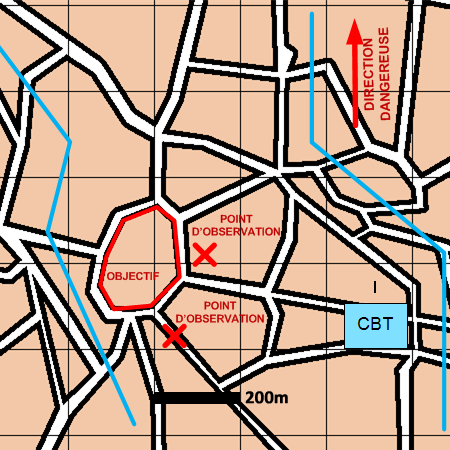

NIVEAU :Automate
ARME :Melee
MISSION :Surveiller
Objectif principal
- Observer
Modalités d'exécution
-
Progresser jusqu'aux positions d'observation :
- Echelon d'éclairage éclaire ;
- GEN en appui mobilité.
-
Le premier échelon surveille l'objectif depuis les positions d'observation ;
-
Les unités de mêlée restantes et les appuis feu sont en appui du premier échelon ;
Schéma de modélisation

Paramètres obligatoires
Fuseau : Zone de responsabilité.
Direction Dangereuse : Orientation privilégiée des capteurs.
Points d'observation : Positions à rejoindre pour observer l'objectif.
Objectif (parmi les suivants)
Zone :
Zone à surveiller.
BU :
Bloc Urbain à surveiller.
Point :
Point à surveiller.
Paramètres optionnels
Nombre d'échelons (1 par défaut)